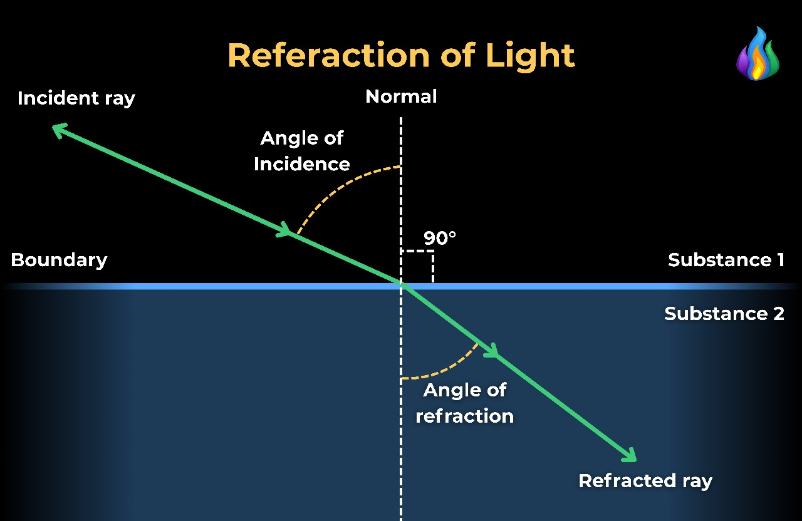

Refraction is the bending of light (it also happens with sound, water and other waves) as it passes from one transparent substance into another.
This bending by refraction makes it possible for us to have lenses, magnifying glasses, prisms and rainbows. Even our eyes depend upon this bending of light. Without refraction, we wouldn’t be able to focus light onto our retina.
Light refracts whenever it travels at an angle into a substance with a different refractive index (optical density). This change of direction is caused by a change in speed. For example, when light travels from air into water, it slows down, causing it to continue to travel at a different angle or direction.
The light bends according to snell s law which is a formula to describe the relationship between the angles of incidence and refraction, when referring to light or other waves passing through a boundary between two different media, such as water, glass, or air. In optics, the law is used in ray tracing to compute the angles of incidence or refraction, and in experimental optics to find the refractive index of a material.
The law states that, for a given pair of media, the ratio of the sines of angle of incidence \(\theta _i\) and angle of refraction \(\theta _r\) is equal to the refractive index of the second medium with regard to the first \(n_{21}\) which is equal to the ratio of the refractive indices of the two media, or equivalently, to the ratio of the phase velocities in the two media.
Snell's law states that
\[\frac{\sin \theta _1}{\sin \theta _2} = n_{21} = \frac{n_2}{n_1} = \frac{v_1}{v_2}\]
Written by Albert Marin